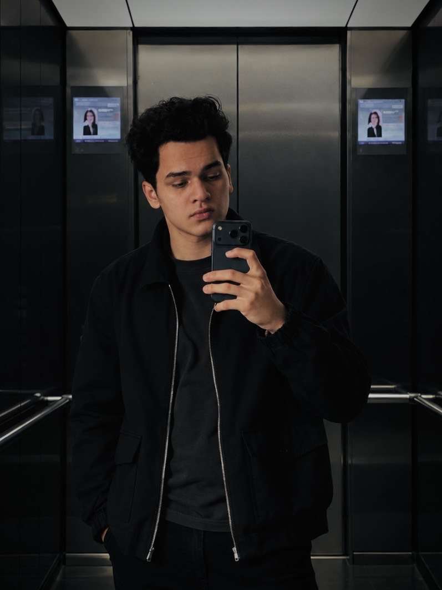

<title>Indra Schormann — Webinar-Funnel, gebaut von Sales At Scale</title>
<link rel="preconnect" href="https://fonts.googleapis.com">
<link rel="preconnect" href="https://fonts.gstatic.com" crossorigin>
<link rel="stylesheet" href="https://fonts.googleapis.com/css2?family=Inter:wght@400;500;600;700;800;900&display=swap">
<link rel="stylesheet" href="styles.css">
<style>
  /* ---------- page-specific: hub ---------- */

  .hub-hero {
    padding: 34px 0 26px; text-align: center;
    background: radial-gradient(ellipse 70% 80% at 50% 0%, var(--glow-soft), transparent 70%);
  }
  .hub-hero .inner { max-width: 760px; margin: 0 auto; }

  /* prospect identity row — avatar beside the "exclusively for" plate */
  .whofor-row {
    display: flex; align-items: center; justify-content: center;
    gap: 18px; margin-bottom: 20px; text-align: left;
  }
  .whofor-pic {
    position: relative; z-index: 1;
    width: 100%; height: 100%; border-radius: 50%;
    background: linear-gradient(150deg, var(--brand) 0%, var(--brand-2) 70%, var(--brand-ink) 100%);
    display: flex; align-items: center; justify-content: center;
    overflow: hidden;
    box-shadow: 0 0 26px -2px color-mix(in srgb, var(--brand) 55%, transparent), var(--shadow);
    border: 1px solid var(--line);
  }
  /* initials sit underneath and show through if the photo is ever missing */
  .whofor-pic .fb {
    font-family: var(--display); font-size: 26px; font-weight: 800; color: var(--on-brand);
    letter-spacing: -0.03em; line-height: 1;
  }
  .whofor-pic img {
    position: absolute; inset: 0;
    width: 100%; height: 100%; object-fit: cover; display: block;
  }
  /* live element — soft brand glow, a slow ring pulsing outward, and a blinking
     status dot, so the prospect's name reads as "on air" rather than static */
  .whofor-avatar { position: relative; flex: none; width: 78px; height: 78px; }
  .whofor-avatar::before,
  .whofor-avatar::after {
    content: ""; position: absolute; inset: 0; border-radius: 50%;
    animation: avatarPulse 2.8s ease-out infinite;
  }
  .whofor-avatar::after { animation-delay: 1.4s; }
  @keyframes avatarPulse {
    0%   { box-shadow: 0 0 0 0 color-mix(in srgb, var(--brand) 50%, transparent); }
    100% { box-shadow: 0 0 0 18px transparent; }
  }
  .whofor-avatar .live-dot {
    position: absolute; right: 1px; bottom: 3px; z-index: 2;
    width: 15px; height: 15px; border-radius: 50%;
    background: var(--brand); border: 3px solid var(--paper);
    animation: badgeBlink 1.6s ease-in-out infinite;
  }
  @media (prefers-reduced-motion: reduce) {
    .whofor-avatar::before, .whofor-avatar::after, .whofor-avatar .live-dot { animation: none; }
  }
  .hub-hero .foronly {
    display: block;
    font-family: var(--label); font-size: 11px; font-weight: 700; letter-spacing: .14em;
    text-transform: uppercase; color: var(--ink-faint); margin-bottom: 6px;
  }
  .hub-hero .whofor {
    font-family: var(--display); font-size: clamp(24px, 3.6vw, 32px); font-weight: 800;
    letter-spacing: -0.03em; color: var(--brand-ink); line-height: 1.1;
    text-shadow: 0 0 30px var(--glow-soft);
  }
  .hub-hero h1 { font-size: clamp(27px, 4.1vw, 40px); margin-bottom: 14px; }
  .hub-hero .lede {
    font-size: 16.5px; color: var(--ink-soft); max-width: 52ch; margin: 0 auto 12px;
  }
  /* the package is the point of this page — start it high enough to be visible
     without scrolling on a laptop, instead of stacking two full section paddings */
  .hub-hero + .sec { padding-top: 42px; }
  /* the package heading is a signpost, not a section intro — tighter than the
     shared .head spacing so the cards themselves come into view sooner */
  .hub-hero + .sec .head { margin-bottom: 32px; }

  /* ---------- deliverable cards ---------- */
  .deliverables { display: flex; flex-direction: column; gap: 16px; }
  .dcard {
    display: grid; grid-template-columns: 64px 1fr auto;
    gap: 26px; align-items: center;
    background: var(--surface); border: 1px solid var(--line);
    border-radius: 18px; padding: 26px 30px;
    text-decoration: none; color: inherit;
    transition: transform .18s ease, box-shadow .18s ease, border-color .18s ease;
  }
  .dcard:hover { transform: translateY(-2px); border-color: var(--brand-line); box-shadow: 0 0 44px -14px var(--glow), var(--shadow); }
  .dcard:focus-visible { outline: 2px solid var(--brand-ink); outline-offset: 3px; }
  /* numbered disc, like the reference's step markers */
  .dcard .num {
    width: 56px; height: 56px; border-radius: 50%;
    display: flex; align-items: center; justify-content: center;
    font-family: var(--display); font-size: 22px; font-weight: 800; line-height: 1;
    letter-spacing: -0.02em; color: var(--brand-ink);
    background: var(--brand-soft); border: 1px solid var(--brand-line);
    box-shadow: 0 0 24px -8px var(--glow);
  }
  .dcard .kind {
    font-family: var(--label); font-size: 11px; font-weight: 700; letter-spacing: .12em;
    text-transform: uppercase; color: var(--brand-ink); margin-bottom: 8px;
  }
  .dcard h3 { font-size: 20px; margin-bottom: 7px; }
  .dcard p { color: var(--ink-soft); font-size: 14.5px; line-height: 1.6; max-width: 60ch; }
  .dcard .go {
    font-family: var(--sans); font-size: 13px; font-weight: 600;
    color: var(--brand-ink); white-space: nowrap;
    display: inline-flex; align-items: center; gap: 8px; line-height: 1;
  }
  .dcard .go svg { width: 1em; height: 1em; flex: none; transition: transform .18s ease; }
  .dcard:hover .go svg { transform: translateX(4px); }

  /* ---------- booking ---------- */
  /* Cal only uses its compact one-row layout when the embed is at least ~780px
     wide (537px tall). Narrower, it stacks date, times and details and grows
     past 1,800px — so the calendar gets a wider column than the heading, and
     screens too narrow for that get a pop-up button instead (see the script). */
  /* no surface of its own: Cal draws a ~730px card centred in this box, and a
     tinted wrapper would show as a strip on either side of it */
  .cal-wrap { max-width: 900px; margin: 0 auto; min-height: 537px; }
  .cal-compact { display: none; text-align: center; }
  #book.book-compact .cal-wrap { display: none; }
  #book.book-compact .cal-compact { display: block; }
  .cal-fallback {
    margin-top: 18px; text-align: center;
    font-family: var(--label); font-size: 11px; letter-spacing: .06em;
    text-transform: uppercase; color: var(--ink-faint);
  }
  .cal-fallback a { color: var(--brand-ink); text-underline-offset: 3px; }

  /* ---------- timeline: a linear flow, each step opens for detail ---------- */
  .flow {
    display: flex; align-items: flex-start; gap: 30px;
    list-style: none; margin: 0; padding: 0;
  }
  .fstep {
    position: relative; flex: 1 1 0; min-width: 0;
    background: var(--surface); border: 1px solid var(--line); border-radius: 16px;
    transition: border-color .18s ease, box-shadow .18s ease;
  }
  .fstep:hover { border-color: var(--brand-line); box-shadow: 0 0 36px -16px var(--glow); }
  .fstep.open { border-color: var(--brand); box-shadow: 0 0 40px -12px var(--glow); }
  /* connector: a line plus chevron in the gap, level with the step's date row */
  .fstep:not(:last-child)::after {
    content: ""; position: absolute; top: 31px; right: -25px;
    width: 20px; height: 2px; background: var(--brand-ink);
    box-shadow: 0 0 8px var(--glow);
  }
  .fstep:not(:last-child)::before {
    content: ""; position: absolute; top: 28px; right: -24px;
    width: 8px; height: 8px;
    border-top: 2px solid var(--brand-ink); border-right: 2px solid var(--brand-ink);
    transform: rotate(45deg);
  }
  /* reset only what a button needs — `font: inherit` would wipe line-height */
  .fhead {
    appearance: none; margin: 0; border: 0; background: none; cursor: pointer;
    display: flex; flex-direction: column; width: 100%; padding: 20px 18px 18px; text-align: left;
    color: inherit; font-family: var(--sans); border-radius: 16px;
  }
  .fhead:focus-visible { outline: 2px solid var(--brand-ink); outline-offset: 3px; }
  .fhead .when {
    display: block; font-family: var(--label); font-size: 10.5px; font-weight: 700; letter-spacing: .1em;
    text-transform: uppercase; color: var(--brand-ink); line-height: 1.4;
    padding-bottom: 10px; margin-bottom: 12px; border-bottom: 1px solid var(--line-soft);
  }
  .fhead .ft {
    display: block; font-family: var(--display); font-size: 16.5px; font-weight: 700; line-height: 1.25;
    letter-spacing: -0.01em; color: var(--ink); margin-bottom: 6px;
  }
  .fhead .fs { display: block; color: var(--ink-soft); font-size: 13.5px; line-height: 1.55; }
  /* margin-top: auto pins "Details" to the bottom, so equal-height heads line up */
  .fhead .more {
    display: inline-flex; align-items: center; align-self: flex-start;
    gap: 7px; margin-top: auto; padding-top: 12px;
    font-family: var(--label); font-size: 10px; letter-spacing: .12em;
    text-transform: uppercase; color: var(--brand-ink); line-height: 1;
  }
  .fhead .more .sign { font-size: 14px; line-height: 1; transition: transform .18s ease; }
  .fstep.open .fhead .more .sign { transform: rotate(45deg); }
  .fdetail { padding: 0 18px 18px; }
  .fdetail ul {
    list-style: none; margin: 0; padding: 12px 0 0;
    border-top: 1px solid var(--line-soft);
    display: flex; flex-direction: column; gap: 9px;
  }
  .fdetail li {
    position: relative; padding-left: 14px;
    color: var(--ink-soft); font-size: 13.5px; line-height: 1.5;
  }
  .fdetail li::before {
    content: ""; position: absolute; left: 0; top: .6em;
    width: 5px; height: 5px; border-radius: 50%; background: var(--brand-ink);
  }

  /* ---------- bio ---------- */
  .biocard {
    display: grid; grid-template-columns: 210px 1fr; gap: 0;
    align-items: stretch; max-width: 700px; margin: 0 auto; overflow: hidden;
    background: var(--surface-hi);
    border-radius: 18px; padding: 0;
    box-shadow: var(--ring);
  }
  .biocard .avatar {
    position: relative; overflow: hidden;
    width: 100%; height: 100%; min-height: 260px; border-radius: 0;
    background: linear-gradient(150deg, var(--brand) 0%, var(--brand-2) 70%, var(--brand-ink) 100%);
    display: flex; align-items: center; justify-content: center;
    font-family: var(--display); font-size: 30px; color: var(--on-brand);
    letter-spacing: -0.02em;
  }
  .biocard .avatar img {
    position: absolute; inset: 0;
    width: 100%; height: 100%; object-fit: cover; display: block;
  }
  /* photo runs the full height of the card, flush to its edges; text keeps the padding */
  .biocard .avatar img { object-position: center 28%; }
  .biocard .bio-text { padding: 30px 32px; }
  .biocard .nm { font-family: var(--display); font-size: 21px; font-weight: 800; letter-spacing: -0.02em; }
  .biocard .rl {
    font-family: var(--label); font-size: 10px; letter-spacing: .13em;
    text-transform: uppercase; color: var(--ink-faint); margin-top: 3px;
  }
  .biocard p { color: var(--ink-soft); font-size: 15px; line-height: 1.65; margin: 14px 0 16px; }
  .contact { display: flex; flex-direction: column; gap: 9px; }
  .contact a {
    font-family: var(--label); font-size: 12px; letter-spacing: .04em;
    color: var(--brand-ink); text-decoration: none;
    display: inline-flex; align-items: center; gap: 9px;
  }
  .contact a:hover { text-decoration: underline; text-underline-offset: 3px; }
  .contact .lbl { color: var(--ink-faint); }

  /* five columns get too tight below ~1000px: the flow turns vertical and the
     connectors point down */
  @media (max-width: 1000px) {
    .flow { flex-direction: column; align-items: stretch; gap: 26px; max-width: 560px; margin: 0 auto; }
    .fstep { flex: none; }
    .fstep:not(:last-child)::after { top: auto; right: auto; bottom: -24px; left: 32px; width: 2px; height: 20px; }
    .fstep:not(:last-child)::before { top: auto; right: auto; bottom: -23px; left: 29px; transform: rotate(135deg); }
  }
  @media (max-width: 640px) {
    .hub-hero { padding: 34px 0 28px; }
    .hub-hero + .sec { padding-top: 40px; }
    .whofor-row { gap: 14px; margin-bottom: 22px; }
    .whofor-avatar { width: 64px; height: 64px; }
    .whofor-pic .fb { font-size: 22px; }
    .dcard { grid-template-columns: 44px 1fr; gap: 18px; padding: 24px 22px; }
    .dcard .num { width: 44px; height: 44px; font-size: 18px; }
    .dcard .go { grid-column: 2; margin-top: 4px; }
    .biocard { grid-template-columns: 1fr; }
    .biocard .avatar { height: 300px; min-height: 0; }
    .biocard .bio-text { padding: 24px 22px 26px; }
  }
  /* one portrait for both slots: frame the head inside the 78px circle */
  .whofor-pic img { inset: auto; left: -51%; top: -40%; width: 246%; height: auto; max-width: none; object-fit: initial; }
</style>

<header class="hub-hero">
  <div class="wrap">
    <div class="inner">
      <div class="whofor-row">
        <span class="whofor-avatar">
          <span class="whofor-pic">
            <span class="fb" aria-hidden="true">IS</span>
            
          </span>
          <span class="live-dot" aria-hidden="true"></span>
        </span>
        <div>
          <span class="foronly">Exklusiv für</span>
          <div class="whofor">Indra Schormann</div>
        </div>
      </div>

      <h1>Ich habe dir einen kompletten Webinar-Funnel gebaut — kostenlos, und er gehört dir.</h1>
      <p class="lede">Kein Mockup, keine Präsentation. Jede Seite unten ist live, funktioniert auf dem Handy und ist für Frauen geschrieben, die ihre erste Wohnung kaufen wollen.</p>
      <p class="microcopy">Gebaut von <a href="https://link.robinpani.com/sas" target="_blank" rel="noopener noreferrer">Sales At Scale</a> · Unverbindlich</p>
    </div>
  </div>
</header>

<section class="sec sec-alt">
  <div class="wrap">
    <div class="head head-c">
      <span class="tag">Das Paket</span>
      <h2>Das habe ich für dich gebaut</h2>
    </div>

    <div class="deliverables">

      <a class="dcard" href="landing.html">
        <span class="num">01</span>
        <div>
          <div class="kind">Landingpage</div>
          <h3>Die Anmeldeseite</h3>
          <p>Hier melden sich deine Interessentinnen an: Live-Countdown, mobil zuerst, geschrieben in Exposé-, Rentenlücken- und Eigenkapital-Sprache.</p>
        </div>
        <span class="go">Landingpage ansehen <svg viewBox="0 0 16 16" fill="none" aria-hidden="true"><path d="M2.5 8h10.5M9 3.75 13.25 8 9 12.25" stroke="currentColor" stroke-width="2.25" stroke-linecap="round" stroke-linejoin="round"/></svg></span>
      </a>

      <a class="dcard" href="offer.html">
        <span class="num">02</span>
        <div>
          <div class="kind">Upsell-Seite</div>
          <h3>Das einmalige Angebot</h3>
          <p>Erscheint direkt nach der Anmeldung — ein Kalkulations-Kit für 47 €, das einen Teil des Werbebudgets zurückholt, bevor das Webinar überhaupt läuft.</p>
        </div>
        <span class="go">Upsell-Seite ansehen <svg viewBox="0 0 16 16" fill="none" aria-hidden="true"><path d="M2.5 8h10.5M9 3.75 13.25 8 9 12.25" stroke="currentColor" stroke-width="2.25" stroke-linecap="round" stroke-linejoin="round"/></svg></span>
      </a>

      <a class="dcard" href="thanks.html">
        <span class="num">03</span>
        <div>
          <div class="kind">Bestätigungsseite</div>
          <h3>Die Show-up-Seite</h3>
          <p>Anmeldungen bringen nichts, wenn niemand kommt. Kalendereintrag mit einem Klick, klare nächste Schritte — und die Bitte, ein Exposé mitzubringen.</p>
        </div>
        <span class="go">Bestätigungsseite ansehen <svg viewBox="0 0 16 16" fill="none" aria-hidden="true"><path d="M2.5 8h10.5M9 3.75 13.25 8 9 12.25" stroke="currentColor" stroke-width="2.25" stroke-linecap="round" stroke-linejoin="round"/></svg></span>
      </a>

      <a class="dcard" href="icp.html">
        <span class="num">04</span>
        <div>
          <div class="kind">ICP-Recherche</div>
          <h3>An wen du wirklich verkaufst</h3>
          <p>Ängste, Wünsche, Einwände und Kaufauslöser deiner Zielgruppe, in ihren eigenen Worten. Nutzbar für E-Mails, Reels und Verkaufsgespräche, nicht nur für diesen Funnel.</p>
        </div>
        <span class="go">Recherche ansehen <svg viewBox="0 0 16 16" fill="none" aria-hidden="true"><path d="M2.5 8h10.5M9 3.75 13.25 8 9 12.25" stroke="currentColor" stroke-width="2.25" stroke-linecap="round" stroke-linejoin="round"/></svg></span>
      </a>

      <a class="dcard" href="ads.html">
        <span class="num">05</span>
        <div>
          <div class="kind">5 Ad-Skripte</div>
          <h3>Skripte, bereit zum Aufnehmen</h3>
          <p>Fünf Blickwinkel, fünf verschiedene Frauen, die sie ansprechen. In deiner Stimme, aufgebaut als Hook, Body, Beweis, Call to Action — mit Kopier-Button für deine Cutterin.</p>
        </div>
        <span class="go">Skripte lesen <svg viewBox="0 0 16 16" fill="none" aria-hidden="true"><path d="M2.5 8h10.5M9 3.75 13.25 8 9 12.25" stroke="currentColor" stroke-width="2.25" stroke-linecap="round" stroke-linejoin="round"/></svg></span>
      </a>

    </div>
  </div>
</section>

<section class="sec" id="book">
  <div class="wrap">
    <div class="head head-c">
      <span class="tag tag-c">Wenn es dir gefällt</span>
      <h2>Such dir einen Termin aus</h2>
      <p>30 Minuten, per Video. Such dir unten einen Termin aus. Wir schauen uns dein Angebot, deinen aktuellen Funnel und die Frage, ob ein fertig umgesetzter Webinar-Funnel der richtige Schritt ist, noch genauer an.</p>
    </div>

    <div class="cal-wrap"><div id="cal-inline"></div></div>
    <div class="cal-compact">
      <button type="button" class="btn" data-cal-link="panirobin/book" data-cal-config='{"layout":"month_view"}'>Termin wählen <svg class="arw" viewBox="0 0 16 16" fill="none" aria-hidden="true"><path d="M2.5 8h10.5M9 3.75 13.25 8 9 12.25" stroke="currentColor" stroke-width="2.25" stroke-linecap="round" stroke-linejoin="round"/></svg></button>
    </div>
    <p class="cal-fallback">
      Kalender lädt nicht? <a href="https://cal.com/panirobin/book" target="_blank" rel="noopener noreferrer">Buchungsseite öffnen →</a>
    </p>
  </div>
</section>

<section class="sec sec-alt">
  <div class="wrap">
    <div class="head head-c">
      <span class="tag">Der Mechanismus</span>
      <h2>Was dieser Webinar-Funnel für dich tut</h2>
      <p>Dein Starterwebinar läuft schon. Der Funnel macht es planbar: mehr Anmeldungen pro Euro, mehr Frauen, die live dabei sind, und Umsatz schon vor dem Abend.</p>
    </div>

    <div class="modules">
      <article class="mod">
        <div class="idx">Schritt 01</div>
        <h3>Ads führen auf eine Seite</h3>
        <p>Statt Fremde direkt zur Academy zu schicken, lädst du sie zu einem konkreten, kostenlosen Abend ein. Kleine Hürde, niedrige Kosten pro Anmeldung.</p>
      </article>
      <article class="mod">
        <div class="idx">Schritt 02</div>
        <h3>Das Webinar verkauft</h3>
        <p>Du rechnest live ein Exposé durch. Wer danach Hilfe will, hat gesehen, wie du denkst — Mentoring oder Cashflow Circle sind der logische nächste Schritt, kein Pitch.</p>
      </article>
      <article class="mod">
        <div class="idx">Schritt 03</div>
        <h3>Der Funnel trägt sich früh</h3>
        <p>Das Kalkulations-Kit läuft direkt nach der Anmeldung. Ein Teil des Werbebudgets kommt zurück, bevor du auch nur eine Folie gezeigt hast.</p>
      </article>
    </div>
  </div>
</section>

<section class="sec">
  <div class="wrap">
    <div class="head head-c">
      <span class="tag">Wenn wir zusammenarbeiten</span>
      <h2>Vom Beispiel zum Livegang in rund zwei Wochen</h2>
    </div>

    <ol class="flow">
      <li class="fstep">
        <button type="button" class="fhead" aria-expanded="false" aria-controls="fd-1">
          <span class="when">Tag 1–2</span>
          <span class="ft">Positionierung</span>
          <span class="fs">Angebot, Versprechen und Webinar-Ablauf stehen.</span>
          <span class="more">Details <span class="sign" aria-hidden="true">+</span></span>
        </button>
        <div class="fdetail" id="fd-1" hidden>
          <ul>
            <li>Titel und Versprechen des Webinars abgestimmt</li>
            <li>Ablauf bis zur Überleitung in Mentoring oder Circle</li>
            <li>Inhalt und Preis des Upsells festgelegt</li>
          </ul>
        </div>
      </li>
      <li class="fstep">
        <button type="button" class="fhead" aria-expanded="false" aria-controls="fd-2">
          <span class="when">Tag 3–6</span>
          <span class="ft">Aufbau</span>
          <span class="fs">Seiten final, Formulare und Zahlung verbunden.</span>
          <span class="more">Details <span class="sign" aria-hidden="true">+</span></span>
        </button>
        <div class="fdetail" id="fd-2" hidden>
          <ul>
            <li>Anmelde-, Angebots- und Danke-Seite mit echten Texten und Fotos</li>
            <li>Anmeldung, Zahlung und CRM verbunden</li>
            <li>Bestätigungs-, Erinnerungs- und No-Show-Mails eingerichtet</li>
          </ul>
        </div>
      </li>
      <li class="fstep">
        <button type="button" class="fhead" aria-expanded="false" aria-controls="fd-3">
          <span class="when">Tag 7–9</span>
          <span class="ft">Ad-Produktion</span>
          <span class="fs">Creatives aus den Skripten, Tracking installiert.</span>
          <span class="more">Details <span class="sign" aria-hidden="true">+</span></span>
        </button>
        <div class="fdetail" id="fd-3" hidden>
          <ul>
            <li>Du nimmst die Skripte auf, wir schneiden die Creatives</li>
            <li>Pixel, Conversion-Events und UTM-Struktur eingerichtet</li>
            <li>Kampagnen und Zielgruppen vorbereitet</li>
          </ul>
        </div>
      </li>
      <li class="fstep">
        <button type="button" class="fhead" aria-expanded="false" aria-controls="fd-4">
          <span class="when">Tag 10–14</span>
          <span class="ft">Ads live &amp; Webinar-Folien</span>
          <span class="fs">Ads laufen, während wir die Folien bauen.</span>
          <span class="more">Details <span class="sign" aria-hidden="true">+</span></span>
        </button>
        <div class="fdetail" id="fd-4" hidden>
          <ul>
            <li>Kampagnen starten mit erstem Testbudget</li>
            <li>Folien fürs Webinar: Inhalt, Q&amp;A, Angebot</li>
            <li>Kosten pro Anmeldung täglich geprüft</li>
          </ul>
        </div>
      </li>
      <li class="fstep">
        <button type="button" class="fhead" aria-expanded="false" aria-controls="fd-5">
          <span class="when">Ab Tag 15</span>
          <span class="ft">Laufen &amp; verbessern</span>
          <span class="fs">Das erste Webinar läuft, wir beheben den schwächsten Schritt.</span>
          <span class="more">Details <span class="sign" aria-hidden="true">+</span></span>
        </button>
        <div class="fdetail" id="fd-5" hidden>
          <ul>
            <li>Du moderierst, wir kümmern uns um Technik und Chat</li>
            <li>Zahlen ausgewertet: Anmeldungen, Show-up, Verkäufe</li>
            <li>Schwächster Schritt zuerst, dann skalieren</li>
          </ul>
        </div>
      </li>
    </ol>
  </div>
</section>

<section class="sec sec-alt">
  <div class="wrap">
    <div class="head head-c">
      <span class="tag">Ehrlicher Vergleich</span>
      <h2>Was du heute hast — und was eine Zusammenarbeit ergänzt</h2>
      <p>Das Beispiel gehört dir so oder so. Nichts davon hängt an einem Call.</p>
    </div>

    <div class="fit">
      <div class="fit-col fit-no">
        <h3>Was du heute bekommen hast</h3>
        <ul>
          <li>
            <span class="ic" aria-hidden="true"><svg viewBox="0 0 20 20" fill="none"><path d="M4 10.6l4 4L16 5.8" stroke="currentColor" stroke-width="2" stroke-linecap="round" stroke-linejoin="round"/></svg></span>
            <span>Drei live Funnel-Seiten, für deine Zielgruppe geschrieben</span>
          </li>
          <li>
            <span class="ic" aria-hidden="true"><svg viewBox="0 0 20 20" fill="none"><path d="M4 10.6l4 4L16 5.8" stroke="currentColor" stroke-width="2" stroke-linecap="round" stroke-linejoin="round"/></svg></span>
            <span>ICP-Recherche, die du überall nutzen kannst</span>
          </li>
          <li>
            <span class="ic" aria-hidden="true"><svg viewBox="0 0 20 20" fill="none"><path d="M4 10.6l4 4L16 5.8" stroke="currentColor" stroke-width="2" stroke-linecap="round" stroke-linejoin="round"/></svg></span>
            <span>Fünf Ad-Skripte, bereit zum Aufnehmen</span>
          </li>
          <li>
            <span class="ic" aria-hidden="true"><svg viewBox="0 0 20 20" fill="none"><path d="M4 10.6l4 4L16 5.8" stroke="currentColor" stroke-width="2" stroke-linecap="round" stroke-linejoin="round"/></svg></span>
            <span>Kein Call nötig, um irgendetwas davon zu behalten</span>
          </li>
        </ul>
      </div>

      <div class="fit-col fit-yes">
        <h3>Was eine Zusammenarbeit ergänzt</h3>
        <ul>
          <li><span class="ic" aria-hidden="true"><svg viewBox="0 0 20 20" fill="none"><path d="M4 10.6l4 4L16 5.8" stroke="currentColor" stroke-width="2" stroke-linecap="round" stroke-linejoin="round"/></svg></span><span>Marktrecherche &amp; Konzeption</span></li>
          <li><span class="ic" aria-hidden="true"><svg viewBox="0 0 20 20" fill="none"><path d="M4 10.6l4 4L16 5.8" stroke="currentColor" stroke-width="2" stroke-linecap="round" stroke-linejoin="round"/></svg></span><span>Erstellung der Webinar-Inhalte</span></li>
          <li><span class="ic" aria-hidden="true"><svg viewBox="0 0 20 20" fill="none"><path d="M4 10.6l4 4L16 5.8" stroke="currentColor" stroke-width="2" stroke-linecap="round" stroke-linejoin="round"/></svg></span><span>Funnel-Aufbau &amp; Optimierung</span></li>
          <li><span class="ic" aria-hidden="true"><svg viewBox="0 0 20 20" fill="none"><path d="M4 10.6l4 4L16 5.8" stroke="currentColor" stroke-width="2" stroke-linecap="round" stroke-linejoin="round"/></svg></span><span>Copywriting</span></li>
          <li><span class="ic" aria-hidden="true"><svg viewBox="0 0 20 20" fill="none"><path d="M4 10.6l4 4L16 5.8" stroke="currentColor" stroke-width="2" stroke-linecap="round" stroke-linejoin="round"/></svg></span><span>Produktion der Ad-Creatives</span></li>
          <li><span class="ic" aria-hidden="true"><svg viewBox="0 0 20 20" fill="none"><path d="M4 10.6l4 4L16 5.8" stroke="currentColor" stroke-width="2" stroke-linecap="round" stroke-linejoin="round"/></svg></span><span>Paid-Ads-Setup &amp; Management</span></li>
          <li><span class="ic" aria-hidden="true"><svg viewBox="0 0 20 20" fill="none"><path d="M4 10.6l4 4L16 5.8" stroke="currentColor" stroke-width="2" stroke-linecap="round" stroke-linejoin="round"/></svg></span><span>Technisches Setup</span></li>
          <li><span class="ic" aria-hidden="true"><svg viewBox="0 0 20 20" fill="none"><path d="M4 10.6l4 4L16 5.8" stroke="currentColor" stroke-width="2" stroke-linecap="round" stroke-linejoin="round"/></svg></span><span>Automationen &amp; Sequenzen</span></li>
          <li><span class="ic" aria-hidden="true"><svg viewBox="0 0 20 20" fill="none"><path d="M4 10.6l4 4L16 5.8" stroke="currentColor" stroke-width="2" stroke-linecap="round" stroke-linejoin="round"/></svg></span><span>Sales-System</span></li>
          <li><span class="ic" aria-hidden="true"><svg viewBox="0 0 20 20" fill="none"><path d="M4 10.6l4 4L16 5.8" stroke="currentColor" stroke-width="2" stroke-linecap="round" stroke-linejoin="round"/></svg></span><span>Launch &amp; Optimierung</span></li>
        </ul>
      </div>
    </div>

    <div style="text-align:center; margin-top:38px">
      <a class="btn" href="#book">Call buchen <svg class="arw" viewBox="0 0 16 16" fill="none" aria-hidden="true"><path d="M2.5 8h10.5M9 3.75 13.25 8 9 12.25" stroke="currentColor" stroke-width="2.25" stroke-linecap="round" stroke-linejoin="round"/></svg></a>
    </div>
  </div>
</section>

<section class="sec sec-handoff">
  <div class="wrap">
    <div class="head head-c">
      <span class="tag">Wer das gebaut hat</span>
      <h2>Kurz zu mir</h2>
    </div>

    <div class="biocard">
      <div class="avatar">RP</div>
      <div class="bio-text">
        <div class="nm">Robin Pani</div>
        <div class="rl">CEO, Sales At Scale</div>
        <p>Ich baue Webinar-Funnels für Expertinnen und Experten, die ihr Thema beherrschen und das Marketing sauber umgesetzt haben wollen. Diesen hier habe ich gebaut, bevor wir je gesprochen haben — zeigen geht schneller als erklären.</p>
        <div class="contact">
          <a href="https://cal.com/panirobin/book" target="_blank" rel="noopener noreferrer"><span class="lbl">Termin</span> cal.com/panirobin/book</a>
          <a href="https://link.robinpani.com/sas" target="_blank" rel="noopener noreferrer"><span class="lbl">Website</span> link.robinpani.com/sas</a>
          <a href="https://instagram.com/robinpanibiz" target="_blank" rel="noopener noreferrer"><span class="lbl">Instagram</span> @robinpanibiz</a>
        </div>
      </div>
    </div>
  </div>
</section>

<section class="final">
  <div class="wrap">
    <span class="tag tag-c">Indra Schormann</span>
    <h2>Das Ganze gehört dir — so oder so.</h2>
    <p class="sub">Wenn es dir hilft, sind 30 Minuten am Telefon der schnellste nächste Schritt. Wenn nicht, behalte Seiten und Recherche trotzdem.</p>
    <a class="btn" href="#book">Call buchen <svg class="arw" viewBox="0 0 16 16" fill="none" aria-hidden="true"><path d="M2.5 8h10.5M9 3.75 13.25 8 9 12.25" stroke="currentColor" stroke-width="2.25" stroke-linecap="round" stroke-linejoin="round"/></svg></a>
    <p class="microcopy">Exklusiv erstellt für Indra Schormann</p>
  </div>
</section>

<footer>
  <div class="wrap">
    <div class="wordmark">Project <em>Treehouse</em></div>
    <div class="fmeta">
      <span>Exklusiv erstellt für Indra Schormann</span>
      <span>Gebaut von <a href="https://link.robinpani.com/sas" target="_blank" rel="noopener noreferrer">Sales At Scale</a></span>
    </div>
    <p class="disc">Dies ist ein Demonstrationspaket, erstellt, um Design und Copywriting für einen Webinar-Funnel zu zeigen. Testimonials, Namen, Preise und Webinar-Details auf den Funnel-Seiten sind beispielhafte Platzhalter und keine Aussagen über reale Personen oder Produkte.</p>
  </div>
</footer>


<script>
  // Wrapper may supply <head>; ensure phones lay out at device width.
  (function () {
    if (!document.querySelector('meta[name="viewport"]')) {
      var mv = document.createElement('meta');
      mv.name = 'viewport';
      mv.content = 'width=device-width, initial-scale=1';
      document.head.appendChild(mv);
    }
  })();

  // Cal.com inline embed. The fallback link below the container stays visible
  // if this never loads, so the section is never a dead end.
  (function (C, A, L) {
    var p = function (a, ar) { a.q.push(ar); };
    var d = C.document;
    C.Cal = C.Cal || function () {
      var cal = C.Cal; var ar = arguments;
      if (!cal.loaded) { cal.ns = {}; cal.q = cal.q || []; d.head.appendChild(d.createElement('script')).src = A; cal.loaded = true; }
      if (ar[0] === L) {
        var api = function () { p(api, arguments); };
        var namespace = ar[1];
        api.q = api.q || [];
        if (typeof namespace === 'string') { cal.ns[namespace] = cal.ns[namespace] || api; p(cal.ns[namespace], ar); p(cal, ['initNamespace', namespace]); }
        else p(cal, ar);
        return;
      }
      p(cal, ar);
    };
  })(window, 'https://app.cal.com/embed/embed.js', 'init');

  Cal('init', { origin: 'https://cal.com' });
  // Inline only where Cal's compact layout fits (the embed needs ~780px);
  // anything narrower gets the button, which opens the same calendar as a
  // pop-up via its data-cal-link. Decided once on load.
  (function () {
    var wrap = document.querySelector('#book .cal-wrap');
    if (wrap.clientWidth >= 790) {
      Cal('inline', {
        elementOrSelector: '#cal-inline',
        calLink: 'panirobin/book',
        layout: 'month_view'
      });
    } else {
      document.getElementById('book').classList.add('book-compact');
    }
    // Cal's event panel repeats the section heading (in the event's own
    // language) and costs ~50px; the call length lives in the section copy
    Cal('ui', { hideEventTypeDetails: true, layout: 'month_view' });
  })();

  // Timeline steps open in place for more detail. In the horizontal layout the
  // closed heads share the tallest one's height, so the row reads as one flow
  // even though titles wrap differently; opening a step only grows that step.
  var heads = Array.prototype.slice.call(document.querySelectorAll('.fhead'));
  var wideFlow = window.matchMedia('(min-width: 1001px)');
  function equalizeHeads() {
    heads.forEach(function (h) { h.style.minHeight = ''; });
    if (!wideFlow.matches) return;
    var tallest = Math.max.apply(null, heads.map(function (h) { return h.offsetHeight; }));
    heads.forEach(function (h) { h.style.minHeight = tallest + 'px'; });
  }
  equalizeHeads();
  if (document.fonts && document.fonts.ready) document.fonts.ready.then(equalizeHeads);
  window.addEventListener('resize', equalizeHeads);

  heads.forEach(function (btn) {
    btn.addEventListener('click', function () {
      var open = btn.getAttribute('aria-expanded') === 'true';
      btn.setAttribute('aria-expanded', String(!open));
      document.getElementById(btn.getAttribute('aria-controls')).hidden = open;
      btn.closest('.fstep').classList.toggle('open', !open);
    });
  });
</script>
